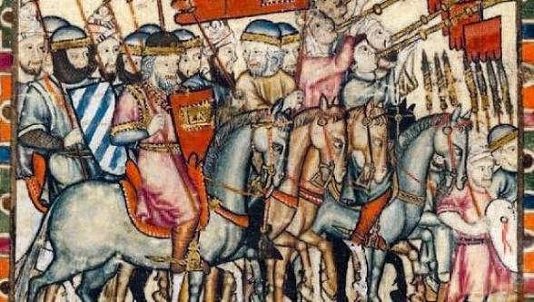
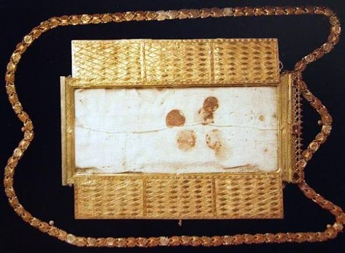
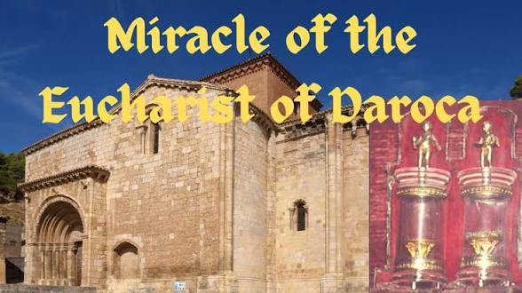
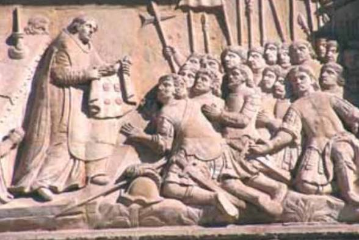

The 1239 Eucharistic miracle of Daroca, Spain, occurred when six consecrated Hosts dissolved into human blood on an altar cloth during a battle, later leading to the institution of the Feast of Corpus Christi.
During a battle, a priest hid six consecrated Hosts in a corporal cloth. Upon his return, he found they had transformed into blood, saturating the fabric. The relic was placed on a mule, which wandered for 12 days before collapsing at the gates of Daroca, marking the city as the chosen guardian of the relic.
This miracle was a primary catalyst for the universal establishment of the Feast of Corpus Christi. The blood-stained corporal is preserved today in the Basilica of Santa María de los Sagrados Corporales in Daroca, where it remains a powerful object of veneration.